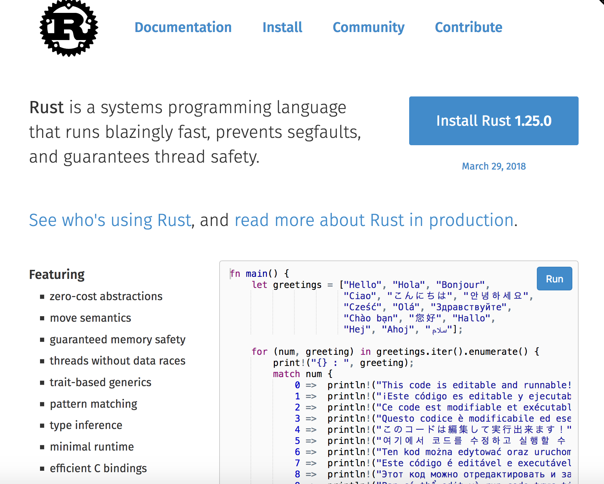
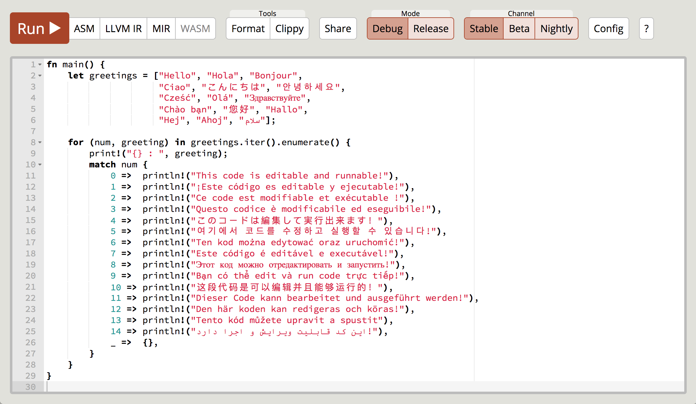

Cuisiner un micro-service avec Rust

Petite recette pour réaliser un micro-service codé en Rust de zéro au déploiement. Afin de découvrir Rust au travers de son écosysteme, ainsi que l'intégration dans une "infrastructure micro-services".
Car un langage n'est pas qu'une syntaxe et un compilateur, mais aussi ce qu'il y a autour: outils, documentation, communauté, ...
Ingrédients
https://rust-lang.org/
Documentation
Catalogues
Ustensiles
https://play.rust-lang.org/
http://rustup.rs/
curl https://sh.rustup.rs -sSf | shrustup default stablerustup showrustup updatehttps://www.rust-lang.org/fr-FR/
rustup docbase toolchain
- rustc
-
rustc --version rustc --help - rustfmt
-
rustfmt --help - rustdoc
-
rustdoc --help - cargo
-
cargo --help
cargo
cargo doc
open target/doc/hello/index.html
cargo
.
├── Cargo.lock
├── Cargo.toml
├── build.rs
├── benches
│ └── large-input.rs
├── examples
│ └── simple.rs
├── src
│ ├── bin
│ │ └── another_executable.rs
│ ├── lib.rs
│ └── main.rs
└── tests
└── some-integration-tests.rscargo
~/.cargo/bincargo install clippycargo install cargo-watchcargo install --listCargo.toml
https://doc.rust-lang.org/cargo/reference/manifest.html
[package]
name = "hello"
version = "0.1.0"
authors = ["name <my@email.com>"]
[dependencies]
gitignore
# Generated by Cargo
# will have compiled files and executables
/target/
# Remove Cargo.lock from gitignore if creating an executable, leave it for libraries
# More information here https://doc.rust-lang.org/cargo/guide/cargo-toml-vs-cargo-lock.html
Cargo.lock
# These are backup files generated by rustfmt
**/*.rs.bk
https://github.com/github/gitignore/blob/master/Rust.gitignore
IDE & Editor
rls TODO setup vscode, extension,...clippy
TODOdebugger
TODO GDB, LLDBprofiler
benchmarks
https://crates.io/
- errors: failures (error_chain)
- logging: env_logger, slog, ...
- monitoring: prometheus
- tracing: opentracing
- marchaling: serde (rustc-serialize), protobuff
- protocol: http, gRPC, tower
- web: hyper, reqwest, ...
- concurrent: thread, rayon, futures/tokio, may, simd
- db: diesel, ???
- os: redox
Préparation
Travis CI
# .travis.yml
language: rust
rust:
- stable
- beta
- nightly
matrix:
allow_failures:
- rust: nightly
fast_finish: true
cache: cargo
Cuisson
Logs
TODO code (startup/shutdown) TODO endpoint log TODO metrics capture(Custom) Metrics
TODO code (prometheus ou telegraph ?) + config (k8s) blackbox (vs whitebox) app or business metrics or ... but not system resources, or request SLI (not SLO)Tracing
TODOHealthCheck/Liveness
TODO code (version + now) + config (k8s)Readiness
TODO code (after 10s) + config (k8s)Dressage
Services
TODO archi overview dessinDockerfile
see https://github.com/michiel/docker-rust-microservice
Alpine Linux uses musl-libc instead of glibc, which is the default for most common distributions.
rustup target add x86_64-unknown-linux-muslOnce that is installed we can explicitly target it when building the service,
cargo build --target x86_64-unknown-linux-musl --releaseDockerfile multi-stage
TODODeployement
Dégustation
Troll en vrac
- taille des images docker
- garbage collector vs ownership
- jit
- temps de démarrage (et pas de chauffage)
- courbe d'apprentissage
- syntax et paradigmes "modernes"
- maturité
- ecosystem, support
Introduire Rust
- cli tools: ripgrep (rg), exa, xsv...
- server & microservices: business, tooling (infra, security, build, test (i'Krelln))
- side-car, agent, proxy services
- function (FaaS)
- databases: TiDB, memat
- webclient: "target webassembly"
- embedded
- fragment code optimisé (pour intégration)
- https://www.rust-lang.org/en-US/friends.html
Jouer avec Rust
- Contruibuer a des crates opensource
- CodinGame, ...
- ???
Merci
https://davidb.github.io/labs_cooking_microservices_with_rust#DevoxxFR